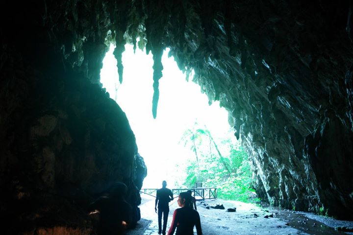

VENEZUELA'S CAVES
Deep within the mountains of Monagas state lies one of Venezuela's most extraordinary natural wonders — a cave of such remarkable scale, biological richness, and historical significance that it was the first natural monument ever declared in the country, explored by Alexander von Humboldt himself in 1799, and home to one of the most astonishing wildlife spectacles in all of South America.

The Cueva del Guácharo in Monagas state is Venezuela's most celebrated cave system and one of the most remarkable underground environments in Latin America. Stretching over 10.2 kilometers in total length — with approximately 4.5 kilometers open to guided visitors — it is the longest known cave in Venezuela and has been explored and documented since the legendary German naturalist Alexander von Humboldt first entered it in 1799 and described its extraordinary inhabitants to the scientific world. The cave takes its name from the guácharo — known in English as the oilbird (Steatornis caripensis) — a unique nocturnal, fruit-eating bird that nests exclusively in deep cave systems and navigates the darkness using echolocation, much like a bat. The Cueva del Guácharo is home to one of the largest known guácharo colonies in the world, with an estimated 15,000 to 18,000 birds roosting and nesting within the cave's vast chambers. The sound and spectacle of thousands of guácharos erupting from the cave entrance at dusk — a thunderous, shrieking cloud of birds pouring out into the evening sky to begin their nightly foraging flights — is one of the most dramatic wildlife moments in Venezuela and an experience unlike anything else in the natural world. Beyond the guácharos, the cave supports an entire ecosystem of cave-adapted species — blind fish, crustaceans, insects, and other invertebrates — that have evolved over thousands of years in complete darkness, sustained entirely by the enormous quantity of fallen guácharo droppings that carpet the cave floor and form the nutritional base of this lightless underground world. The cave's chambers are immense and architecturally dramatic, with soaring ceilings, massive stalactite and stalagmite formations, underground rivers, and passages that alternate between cathedral-like vaulted spaces and tight, intimate tunnels. The guided tour takes visitors along a marked path through the cave's most spectacular sections, passing formations with evocative names — El Salón de los Loros, La Sala de Humboldt — that hint at the long history of wonder and exploration that this cave has inspired. The Cueva del Guácharo is located near the town of Caripe, known as "the garden of Venezuela" for its cool mountain climate and spectacular surrounding landscape of cloud forests and coffee plantations. Combining a visit to the cave with time in Caripe and the surrounding Cueva del Guácharo National Park makes for one of the most complete and memorable natural tourism experiences in the entire country.